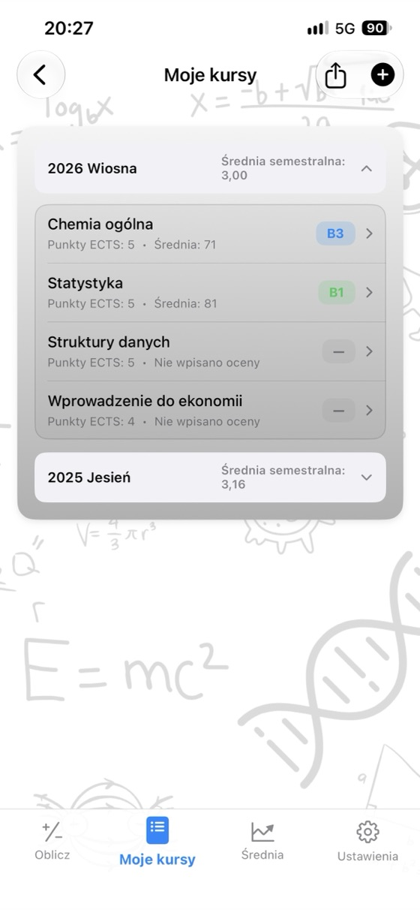
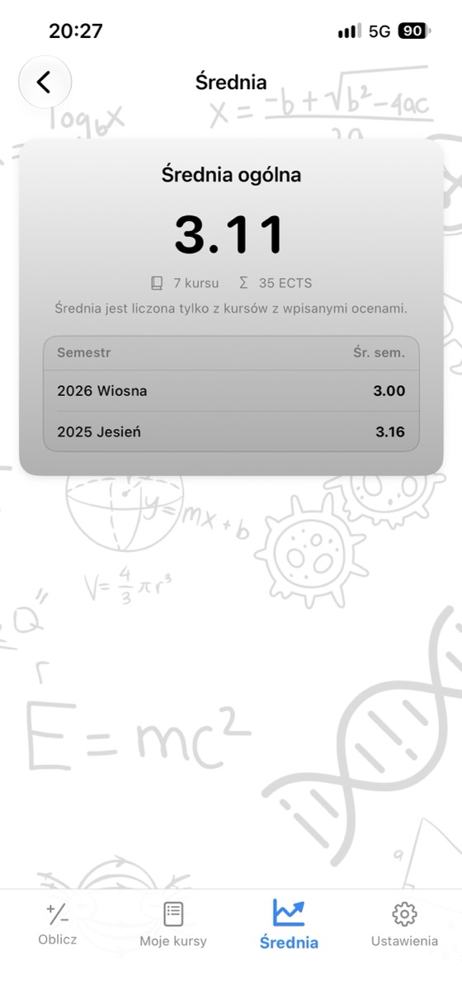
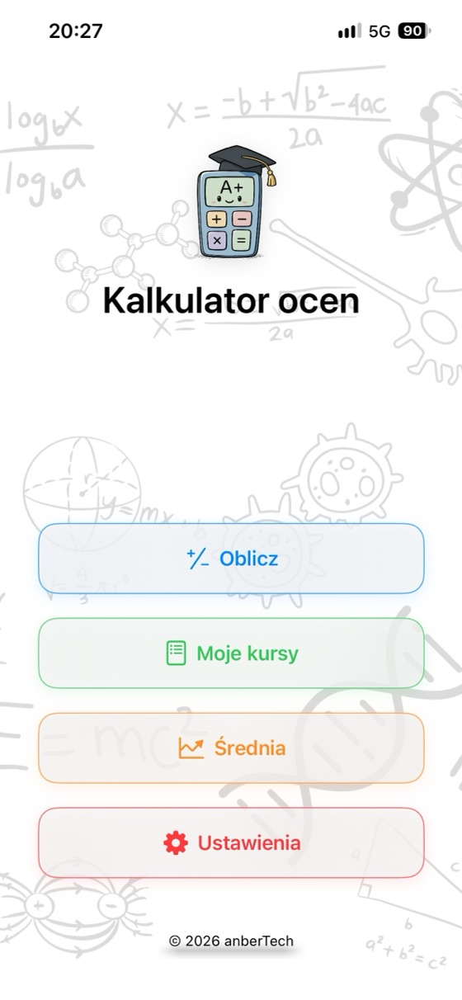
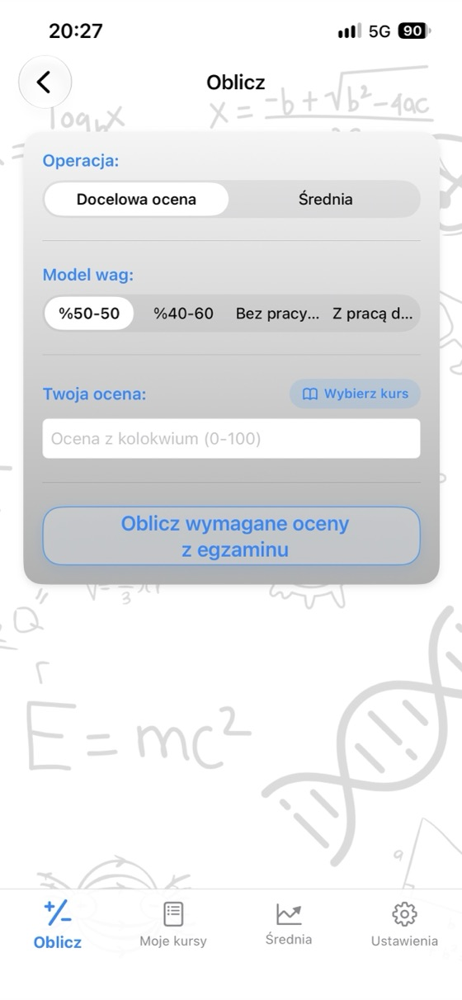
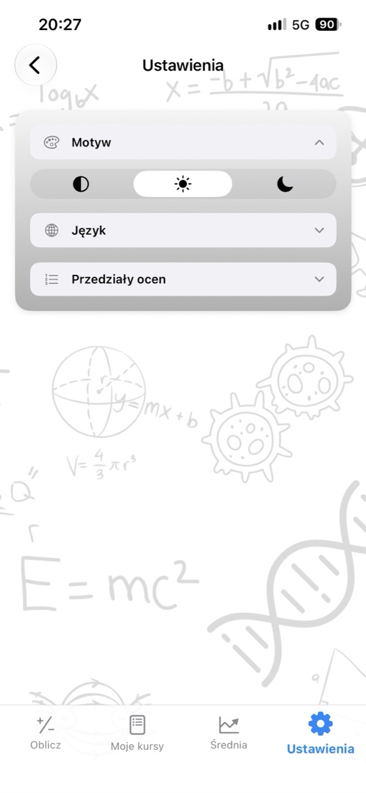

Poznaj swoje wyniki,
zaplanuj przyszłość.
Średnia z przedmiotu, wymagana ocena z egzaminu i średnia GPA w jednej aplikacji. Bez reklam, bez konta, w pełni offline.
- ✓ Za darmo
- ✓ Bez reklam
- ✓ Bez konta
- ✓ Offline


Oblicz teraz
Wypróbuj kalkulator tutaj, zanim pobierzesz aplikację. Zmień wartości, a wynik zaktualizuje się od razu.
Waga egzaminu: 60%
Waga egzaminu: 60%
Darmowe kalkulatory
Korzystaj w przeglądarce bez pobierania aplikacji. Bez rejestracji, a wpisane oceny nigdy nie opuszczają Twojego urządzenia.
Dlaczego Kalkulator ocen?
Średnia z przedmiotu
Wpisz oceny z kolokwium, egzaminu i pracy domowej wraz z ich wagami, a od razu zobaczysz średnią i ocenę literową.
Wymagana ocena z egzaminu
Sprawdź na jednym ekranie, jaki minimalny wynik egzaminu pozwoli uzyskać każdą z ocen literowych.
Śledzenie średniej GPA
Zapisuj kursy według semestrów. Średnia semestralna i średnia ogólna aktualizują się automatycznie.
Własna skala ocen
Dostosuj progi ocen literowych i przypisane im punkty do zasad swojej uczelni.
Zestawienie ocen w PDF
Jednym dotknięciem udostępnij zestawienie kursów i średnią w formacie PDF.
17 języków
Angielski, hiszpański, niemiecki, japoński, arabski, turecki i inne.
Prywatność przede wszystkim
Bez konta, reklam i śledzenia. Twoje dane zostają na Twoim urządzeniu.
Działa offline
Bez internetu: w sesji, w bibliotece, gdziekolwiek jesteś.
Zobacz aplikację



Najczęściej zadawane pytania
Jak obliczyć średnią z przedmiotu?
Pomnóż każdą ocenę przez jej wagę i dodaj wyniki. Jeśli kolokwium ma wagę 40%, a egzamin 60%: średnia = kolokwium × 0,40 + egzamin × 0,60. Wynik 62 z kolokwium i 75 z egzaminu daje 62 × 0,40 + 75 × 0,60 = 69,8. Jeśli masz też ocenę z pracy domowej, uwzględnij ją wraz z wagą. Suma wag musi wynosić 100%.
Ile muszę dostać na egzaminie, żeby zdać?
Wymagany wynik egzaminu = (docelowa średnia − kolokwium × waga kolokwium) ÷ waga egzaminu. Przy wyniku 55 z kolokwium o wadze 40% i progu zaliczenia 50: (50 − 22) ÷ 0,60 = 46,7, więc potrzebujesz co najmniej 47 z egzaminu. Kalkulator ocen oblicza to dla wszystkich ocen literowych jednocześnie.
Jak oblicza się średnią GPA?
Pomnóż punkty przypisane ocenie z każdego przedmiotu (A = 4,0, B = 3,0 …) przez liczbę punktów ECTS tego przedmiotu, dodaj wyniki i podziel przez sumę punktów ECTS. Otrzymasz średnią GPA w skali 4,0.
Czy progi ocen literowych są wszędzie takie same?
Nie. Progi i punkty przypisane ocenom różnią się między krajami, uczelniami, a nawet przedmiotami. W aplikacji możesz dostosować skalę ocen dokładnie do swoich zasad.
Co oznacza minimalna ocena z egzaminu?
Na niektórych uczelniach wynik egzaminu poniżej określonego progu (na przykład 30, 45 lub 50) oznacza brak zaliczenia, nawet jeśli średnia jest wystarczająco wysoka. Wpisz wymagane minimum, a kalkulator uwzględni je przy obliczaniu potrzebnego wyniku egzaminu.
Czy aplikacja Kalkulator ocen jest darmowa?
Tak. Aplikacja jest dostępna za darmo w App Store, bez reklam, subskrypcji i zakupów w aplikacji. Kalkulatory na tej stronie też są darmowe.
Gdzie są przechowywane moje oceny?
Wyłącznie na Twoim urządzeniu. Nie potrzebujesz konta i nic nie jest wysyłane na serwer. Oceny wpisane w kalkulatorach online nigdy nie opuszczają Twojej przeglądarki.
Czy jest wersja na Android?
Wersja na Android pojawi się wkrótce w Google Play. Obecnie aplikacja jest dostępna w App Store na iPhone i iPad (iOS 17.6 lub nowszy).
Miej wszystkie kursy w jednym miejscu
Za darmo. Bez reklam. Bez konta.